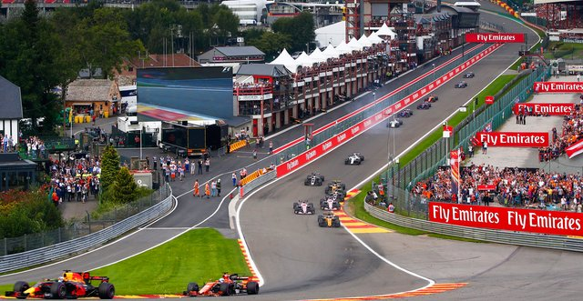

BELGIAN GRAND PRIX
Cicuit Length:
7.004km (4.352 mi)
Turns:
20
Number of Laps:
44
First Grand Prix:
1950
Race Distance:
308.052 km
Belgian's race takes place in Spa. Spa is a city of Belgian,
about 10.000 people live in Spa. And across Hungary live about 11,5 Million inhabitants. So far the record holder
of this circuit is Valteri Bottas. This year (2021) the race will be on August 29. The fastest speed last year (2019) was measured at 362 km/h.
The Hungarian Grand Prix is often the twelfth event of the Formula 1 of the Calendar year.

Winners of the Belgian GP
2020 - Lewis Hamilton
2019 - Charles Leclerc
2018 - Sebastian Vettel
2017 - Lewis Hamilton
2016 - Nico Rosberg
2015 - Lewis Hamilton
2014 - Daniel Ricciardo
2013 - Sebastian Vettel
2012 - Jenson Button
2011 - Sebastian Vettel
2010 - Lewis Hamilton
2009 - Kimi Räikkönen
2008 - Felipe Massa
2007 - Kimi Räikkönen